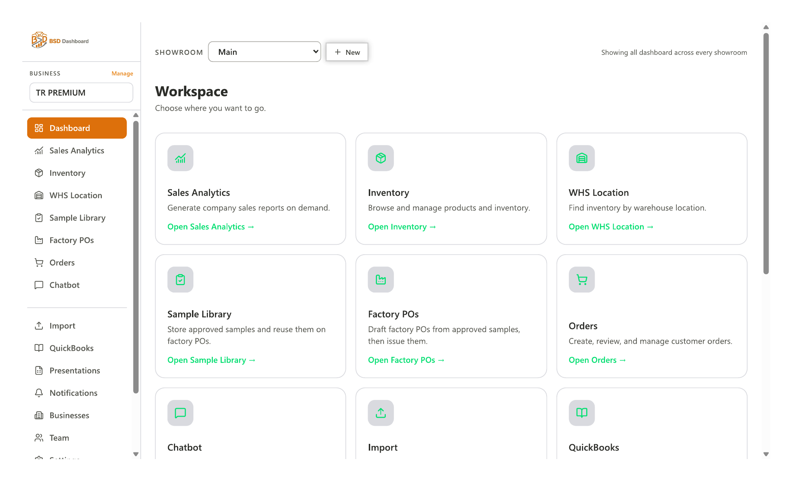
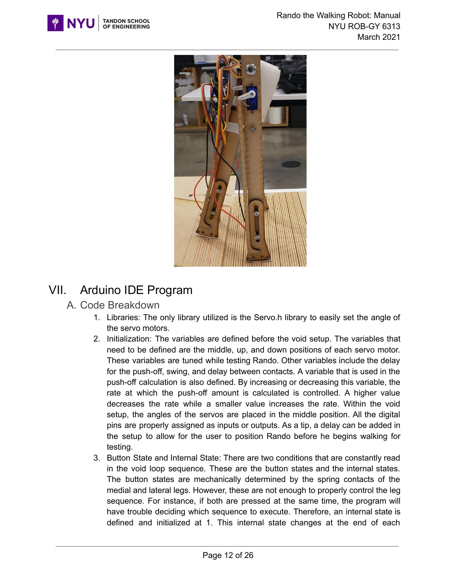

2022 — Present
E-commerce Operations & Sales Growth
BSD Trading · Apparel Wholesale
Drive multi-channel sales, inventory, Shopify operations, retail partnerships, reporting, forecasting, and warehouse workflows.
Custom Business Software & Operations Automation · Brooklyn, NY
01 / About
I build custom software that connects technology, data, and people to make complex operations run better.
My engineering background brings a structured approach to problem-solving, automation, and system design. At BSD Trading, I apply it every day—building tools that connect inventory, production, sales, and reporting so teams can spend less time chasing information and more time making decisions.
02 / Résumé
2022 — Present
BSD Trading · Apparel Wholesale
Drive multi-channel sales, inventory, Shopify operations, retail partnerships, reporting, forecasting, and warehouse workflows.
2022 — Present
BSD Trading · Apparel Wholesale
Build connected systems and data tools that replace manual handoffs, reduce errors, and improve operational visibility.
Jan 2020 — May 2021
NYU Medical Robotics & Interactive Intelligent Technologies Lab
Analyzed EMG connectivity in 40 stroke patients and developed protocols for rehabilitation research.
May 2021
NYU Tandon School of Engineering
Focused on advanced mechatronics, optimal control, reinforcement learning, and robotics simulation.
Feb 2019
Sharif University of Technology · Tehran, Iran
Foundation in automation, electronics, mechanical design, dynamics, and automatic control.
03 / Selected projects

01
Built an internal website and operating system for BSD Trading to track inventory and the full product lifecycle. It brings together sales analytics, inventory visibility, line-sheet exports, and presentation-ready product data in one place.
BeforeFactory POs were handled through emails, Drive uploads, and three separate spreadsheets for samples, orders, and status tracking.
BuiltA shared system where factory orders become booked inventory, teams update production and shipping ETAs, and sales records reflect the latest information automatically.
ValueOne source of truth for production, shipping, and sales—reducing back-and-forth, avoiding miscommunication, and lowering reliance on separate tools.

02
Co-authored a 26-page build and test manual for a low-cost passive dynamic walker. Designed, laser-cut, assembled, and programmed the Arduino-controlled prototype; created a repeatable test platform and simulation to quantify its gait.
SolidWorks · Arduino · Simulink · Fabrication
03
Co-authored a Scientific Reports paper on EMG-based functional muscle networks and sensorimotor integration after stroke, developed through research at NYU Medical Robotics.
Read the publication ↗EMG · MATLAB · Medical robotics04
Developed a semi-autonomous follow-me robot with cameras, light receivers, ultrasonic sensing, and iterated mechanical prototypes.
Raspberry Pi · Propeller · Prototyping05
Designed and simulated teleoperation controllers that improve stability and reduce the effects of communication delay in master–slave systems.
MATLAB · Simulink · Controls04 / Contact
Send a note and I’ll get back to you as soon as I can.
Brooklyn, NY
Available for opportunities, collaborations, and a good conversation.
Your message will be delivered privately.